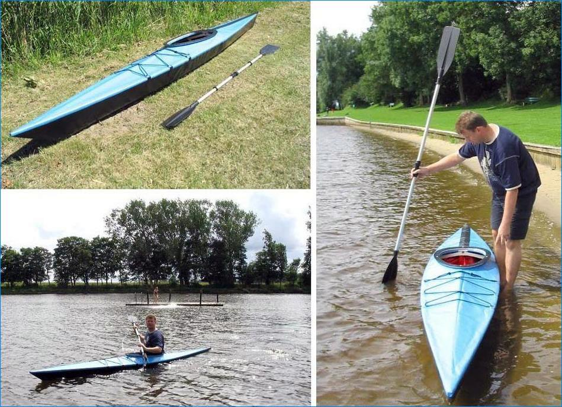

| (New) Yarra by Guido Borck (DE) | Menu Previous Page Next Page |
|
 Guido Borck of Hamburg, Germany paddles his recently completed Yarra folder ( 14.5ft X 24in / 4.42m X 61cm). The Yarra has the greatest beam of any design in the manual. This is an earlier version of the Yarra design, with the newer version having wider chine spacing and more rocker.
|
|